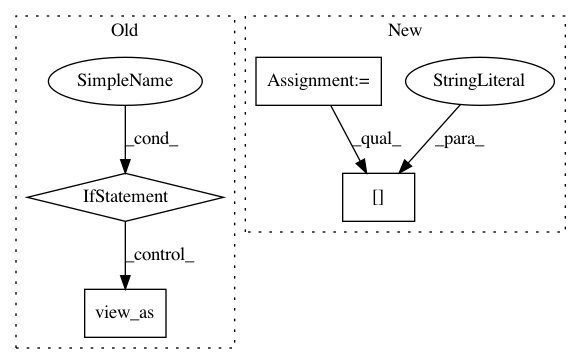

03a57decde62c76783ef7e2288bd61bc87f6e266,fairseq/optim/fp16_optimizer.py,FP16Optimizer,step,#FP16Optimizer#Any#,168
Before Change
// copy FP32 params back into FP16 model
offset = 0
for p in self.params:
if not p.requires_grad:
continue
numel = p.data.numel()
p.data.copy_(self.fp32_params.data[offset:offset+numel].view_as(p.data))
offset += numel
def zero_grad(self):
After Change
self._unscale_grads()
// convert params and grads to FP32 (lazily)
for group in self.wrapped_optimizer.optimizer.param_groups:
group["params"] = ConvertToFP32(group["params"])
self.wrapped_optimizer.step(closure)
// convert params back to FP16
for group in self.wrapped_optimizer.optimizer.param_groups:
In pattern: SUPERPATTERN
Frequency: 3
Non-data size: 4
Instances
Project Name: elbayadm/attn2d
Commit Name: 03a57decde62c76783ef7e2288bd61bc87f6e266
Time: 2018-12-24
Author: myleott@fb.com
File Name: fairseq/optim/fp16_optimizer.py
Class Name: FP16Optimizer
Method Name: step
Project Name: cornellius-gp/gpytorch
Commit Name: 784d00f0c38fb5fd77aed0a6dffb93cc98a0c990
Time: 2019-01-29
Author: gpleiss@gmail.com
File Name: gpytorch/likelihoods/gaussian_likelihood.py
Class Name: GaussianLikelihood
Method Name: pyro_sample_y